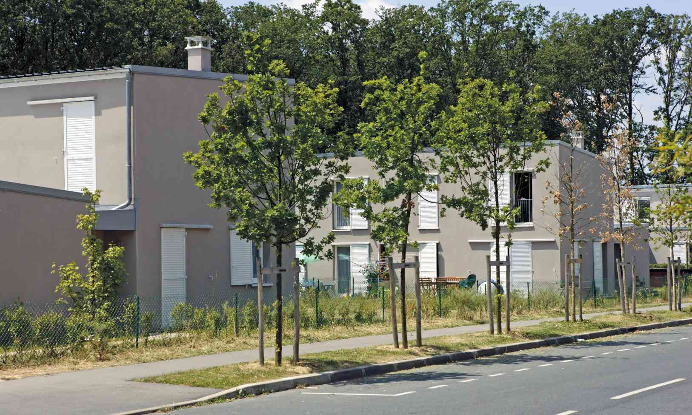

Survolez l'image et agrandissez/réduisez la vue à l'aide de la molette.
Budget: 1 660 000 € HT
Surface: SHON 2 165 m2
Date début: 2000
Date fin: 2004
Maîtrise d'ouvrage: Expansiel (SEM)
Co-traitant(s): Bureau des paysages
Description:
Situé en bordure de la ZAC des Aunettes, le site s’étend d’est en ouest, à la lisière du Bois des Trous,
dans lequel il s’avance en arc de cercle convexe vers le sud, et selon une limite irrégulière et segmentée.
L’opération est découpée en deux : 15 maisons à l’ouest et 6 à l’est de l’îlot. Le projet comprend
les bâtiments du programme ainsi que la voirie privée de desserte interne à l’îlot et les espaces
extérieurs, à caractère privé, individuels et collectifs.
À la limite entre une zone urbanisée et une zone
forestière, l’îlot présente les caractéristiques d’une interpénétration étant lui même une avancée
urbanisée sur la forêt : le Bois des Trous s’y prolonge par un bras de verdure qui sépare les parties ouest
et est. Dans cette optique, l’organisation du projet permet de conserver une certaine perméabilité en ce
qui concerne la liaison entre la Z.A.C. et le Bois des Trous : les vues traversantes y restent nombreuses
et les passages commodes. L’ensemble des maisons et garages est construit en maçonnerie
avec un parement en enduit teinte clair. Les toits sont en bacs acier,les chéneaux et les descentes
eaux pluviales en zinc naturel.
{kind=link}
{kind=link}
{kind=link}
{kind=link}